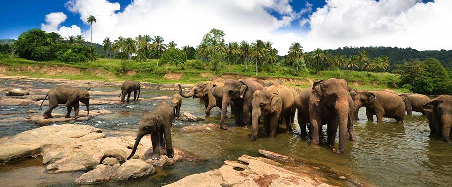

The Department of Wildlife Conservation is a governmental body dedicated to the preservation and protection of Sri Lanka's rich biodiversity. Established with the mission to ensure the sustainable coexistence of wildlife and humans, the department actively engages in various initiatives and conservation programs.
A number of protected areas has been selected all around sri lanka
Strict Natural Reserve – 03
National Park – 25
Nature Reserve – 09
Jungle Corridor – 02
Marine National Park – 01
Marine Reserves – 00
Buffer zone – 00
Sanctuary or a Managed Elephant Reserve – 68 +1
Protected Areas Gallery
Sinharaja Forest Reserve

Description: Sinharaja is a UNESCO World Heritage Site and one of the last remaining rainforests in Sri Lanka. It is rich in biodiversity, hosting a variety of endemic flora and fauna.
Wilpattu National Park
Description: Wilpattu is the largest national park in Sri Lanka and is known for its natural lakes, dense foliage, and a variety of wildlife, including sloth bears and spotted deer.
Minneriya National Park

Description: Minneriya is famous for the gathering of elephants around the Minneriya Tank during the dry season. The park is a haven for elephant enthusiasts and birdwatchers.